General Information
This branded website is publicly available at https://amydg1.github.io/Happy-Tails/
This website was created by…
- Amy de Graaf (ID: 230012)
- Luuk van Houts (ID: 231376 )
- Jada Page (ID: 247298)
- Tess Lehner (ID: 247287)
Content
| # | Student ID | Value | Name and link of content |
|---|---|---|---|
| 1. | 230012 | Homepage and Corporate | Homepage Corporate |
| 2. | 231376 | Services and About us | Services About us |
| 3. | 247298 | Contact page | Contact |
| 4. | 247287 | Blog | Blog |
Slogan
Paws up for playtime!
The slogan captures the excitement and joy. “Paws up” symbolizes the enthusiasm, while “for playtime” focuses on the core of our service. It aligns with our mission to create a playful, trustworthy community where dogs and dog owners can connect with playdates, care and friendship for their furry companions.
Brand message
Making it easier for dog lovers to find playmates for their pups
The brand message reflects the values by making it easy for dog owners to connect, promoting playfulness and companionship, while still ensuring convenience and peace of mind through safe and reliable connections
Vision
To connect dog owners with trusted like-minded dog lovers, ensuring every dog gets the attention, play, and care they deserve.
Our vision focuses on connecting the dog owners with like-minded pet lovers, ensuring that they will get their attention and play they deserve, while fostering trusted community based on companionship and care beyond basic needs
Mission
Our mission is to create a vibrant and trusted community where dog owners can connect, socialize, and find pawmates, care, and friendship for their furry companions. We make every dog's life happier and healthier by fostering meaningful connections and offering convenient services like playdates and dog sitting. Because every pup deserves a fur-ever friend!
This mission supports the need for a trusted, social space where dog owners can easily connect and care for their pets. By offering services like playdates and dog sitting, it promotes happier, healthier lives for dogs while building a strong, supportive community. Every pup deserves friendship, and so do their humans.
Values
Where Every Tail Finds Joy!
Playing is the basics of the well-being of your dogs. It’s not only about having fun with your dog, it’s about having your dog play with others to socialize them, it’s about their mental stimulation and letting them run around and meet their limits. This value emphasizes the importance of giving your dog opportunities to interact, explore and enjoy their time with other dogs and humans. whether you do it through playdates, games, or adventure. Play is an essential part of a dog's health and happiness.
Paws beyond the basics
Besides the basics of feeding, walking and playing with your dog. We also ensure that your dog feels mentally stimulated, furfilled and satisfied. This value represents our effort to provide services such as dog sitting, playdates and creating a community of dog owners where you can find support and meet new people for you and your four-legged friend.
Pawsitive Connections, Unbreakable Bonds!
This value highlights the importance of building a connection, discovering new adventures and creating bonds that support the companionship between dogs and humans. The bond between your dog and you is the most special bond you create in life, making sure your dog is happy and taking care of is the best thing you can do for you dog, helping your dog find new connections and friend helps dogs to feel socially and physically in shape, and ensures that owners can create a new network.
We've Got Your Tail Covered!
We recognize the struggle that life can be busy, and finding time to care for and socialize your dog isn’t as easy as most people think. This value is the core of our company, providing a hassle-free solution for dog owners to help your dog find even more joy, whether through our easy-to-arrange playdates, the dog-sitting services, or our supportive community.
Trust Us, We Don’t Play Fetch with Safety
Trust and safety are essential when it comes to you and your dog. That’s why we create a secure environment where you can confidently connect with a trusted dog community. Our reliable service ensures that your dog is always in safe hands, giving you peace of mind. By fostering meaningful connections between owners and their dogs, we build a supportive network where safety and trust come first.
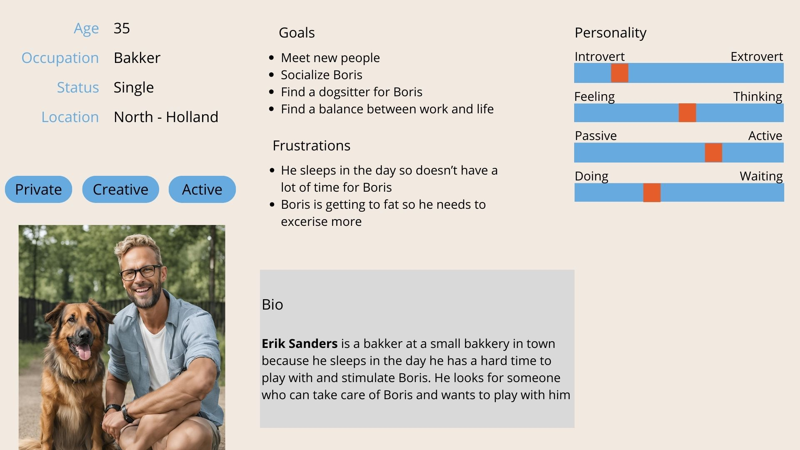
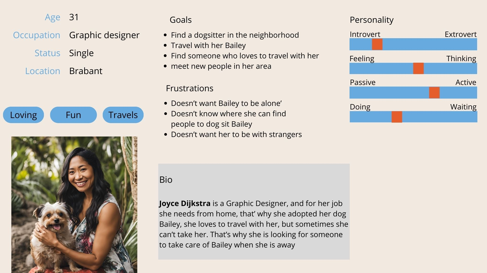
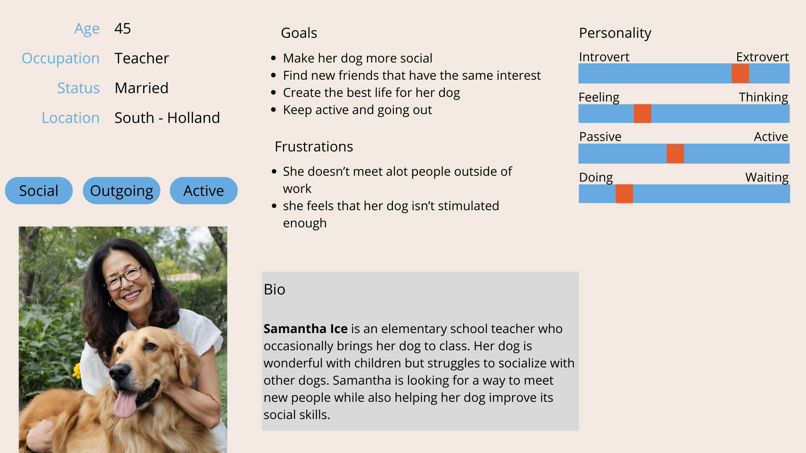
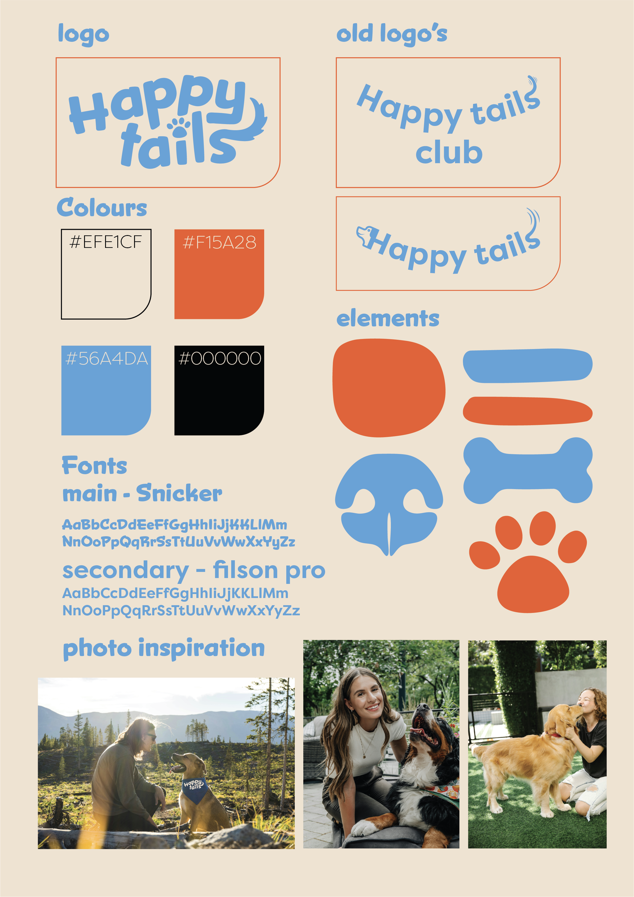
Do's

Don'ts

Flyer front and back
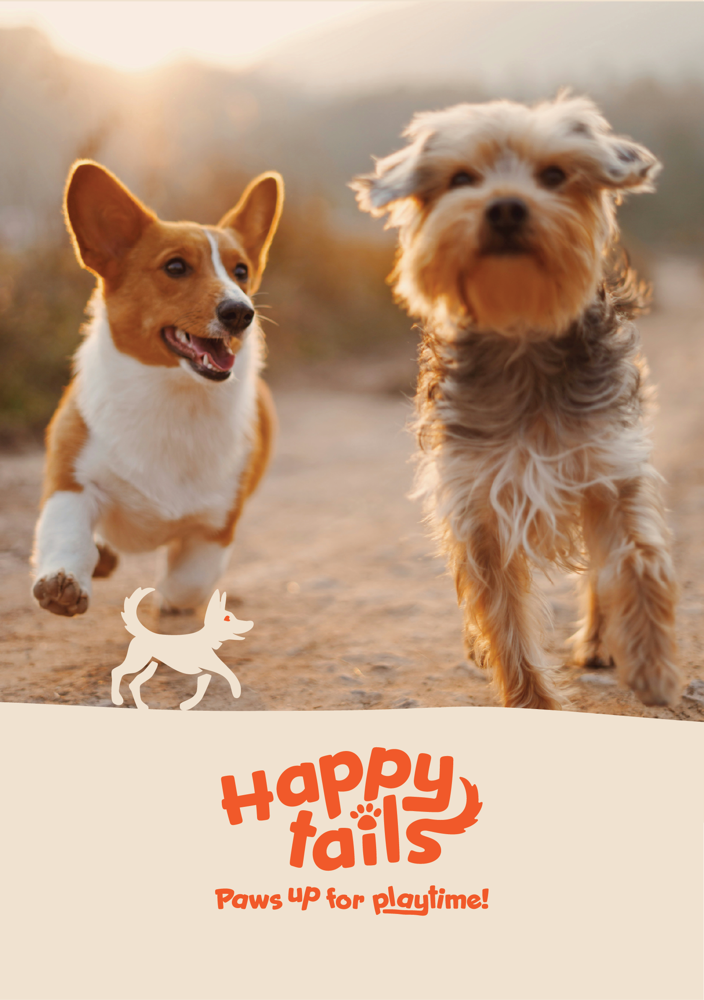
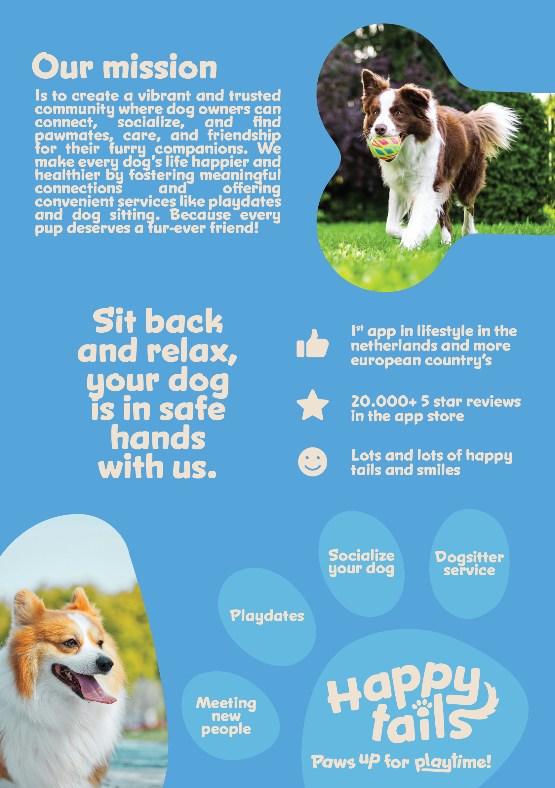
Design Elements
Our visual identity is built around a simple yet intentional three-color palette.- #EFE1CF This is our base color, used as the background in most designs. It brings warmth, calmness, and a natural tone that reflects comfort and friendliness. Beige creates a neutral canvas that allows our accent colors to stand out while maintaining a soft, inviting aesthetic.
- #F15A28 One of the few colors that dogs can perceive, blue was selected for its practicality and emotional resonance. It symbolizes trust, reliability, and calmness, values that are at the heart of our brand. Blue also helps us connect with both pets and their owners on a deeper level.
- #56A4DA s the complementary color to blue, orange brings energy, enthusiasm, and warmth to our palette. It adds a playful, vibrant touch that contrasts beautifully with blue, creating a visually harmonious and balanced feel.
Together, these colors not only create a strong and consistent visual identity but also support the emotional tone we want to convey, joy, trust, and a sense of belonging for every member of our dog-loving community.
Font choices
The main font is called “snicker”. This font is playful and looks like it’s written with the hand. This gives an authentic and friendly look.
The secondary font is Filson pro. This is a more simple font that is easily readable for larger pieces of text while still fitting within our style. It is a dynamic and modern font.
Logo
The logo is made with a playful and fun font, and the letters are placed in a lively way to give it a cheerful and friendly look. Inside the logo, there are small details that show a paw and a tail. The tail starts from the end of the letter “s” and curls around playfully. The top of the letter“I” is shaped like a paw, which shows that dogs are a big part of what we do.
These little touches make the logo feel warm, fun, and welcoming. It fits really well with our goal of bringing dogs and their owners together to play, connect, and enjoy time with others.
Icons
The icons we use are all connected to things that belong to dogs. For example, we use shapes like a paw, a nose, and bones. These dog-related elements help make the visual style more playful and clearly focused on dogs. They make it easy for people to see right away that our brand is all about dogs and their happiness.
In our design, we also choose soft, round shapes instead of straight lines. Round shapes feel more friendly, gentle, and fun. They help create a warm and welcoming feeling, which fits perfectly with our brand’s goal, to build a kind, joyful place for dogs and their owners. Everything in our visual style, from the icons to the shapes, is made to support that friendly and playful feeling.
Production
Design Elements
Visual Identity
Our visual identity is built around a simple yet intentional three-color palette:
- #EFE1CF This is our base color, used as the background in most designs. It brings warmth, calmness, and a natural tone that reflects comfort and friendliness. Beige creates a neutral canvas that allows our accent colors to stand out while maintaining a soft, inviting aesthetic.
- #F15A28 As the complementary color to blue, orange brings energy, enthusiasm, and warmth to our palette. It adds a playful, vibrant touch that contrasts beautifully with blue, creating a visually harmonious and balanced feel.
- #56A4DA One of the few colors that dogs can perceive, blue was selected for its practicality and emotional resonance. It symbolizes trust, reliability, and calmness, values that are at the heart of our brand.
Together, these colors not only create a strong and consistent visual identity but also support the emotional tone we want to convey: joy, trust, and a sense of belonging for every member of our dog-loving community.
Font Choices
The main font is called “Snicker”. This font is playful and looks handwritten. This gives an authentic and friendly look.
The secondary font is Filson Pro. This is a more simple font that is easily readable for larger pieces of text while still fitting within our style. It is a dynamic and modern font.
Logo
The logo is made with a playful and fun font, and the letters are placed in a lively way to give it a cheerful and friendly look. Inside the logo, there are small details that show a paw and a tail. The tail starts from the end of the letter “s” and curls around playfully. The top of the letter “i” is shaped like a paw, which shows that dogs are a big part of what we do.
These little touches make the logo feel warm, fun, and welcoming. It fits really well with our goal of bringing dogs and their owners together to play, connect, and enjoy time with others.
Icons
The icons we use are all connected to things that belong to dogs. For example, we use shapes like a paw, a nose, and bones. These dog-related elements help make the visual style more playful and clearly focused on dogs.
In our design, we also choose soft, round shapes instead of straight lines. Round shapes feel more friendly, gentle, and fun. They help create a warm and welcoming feeling, which fits perfectly with our brand’s goal: to build a kind, joyful place for dogs and their owners. Everything in our visual style, from the icons to the shapes, is made to support that friendly and playful feeling.
User Interface Patterns
On our homepage (index page), we use different design elements to make the website easy and fun to use. At the top of the page, there is a video that grabs your attention right away. This video gives you a quick idea of what our website is about and encourages you to scroll down and explore more.
We also have an interactive map that shows where you can find potential playmates for your dog in your area. This makes it easier for users to see what's available nearby and helps them connect with others in their neighborhood.
Our header and footer are always visible on every page. These sections help you navigate through the website quickly by giving direct links to other pages like the contact page, services, and more.
Contact Page
Our contact page is simple and easy to use. You can type in your questions, feedback, or anything else you want to ask us. It's a great way to get in touch if you need help or want more information. We make sure to respond as soon as possible to help you out.
Service Page
On the service page, we use cards to display our different services. Each card has a title, a short description, and sometimes a fun image or icon. This layout makes it easier to read and helps users quickly understand what we offer. The clean and organized design helps you find what you're looking for without feeling overwhelmed.
About Us Page
We wanted to show who we are in a way that feels personal, fun, and playful. That’s why we chose an interactive design with movement and clear structure. Each team member is shown on an individual card. When you hover over a card, it smoothly slides down, revealing more information about that person.
We also added a subtle animation to our profile pictures. When you move your mouse over them, the images move forward slightly. This small effect makes the page feel more alive and invites the user to take a closer look. It helps our personalities stand out and adds a creative touch that fits the vibe of our project. Each card also includes a button that redirects to our LinkedIn profiles, making it easier for people to connect with us.
Structure of Navigation and Content
Our structure needed to be easy to use because our target audience needs a clear and usable site where they can easily click through.
- Index Page
- About Us
- Services
- Corporate
- Blog
- Contact Page (linked in the footer)
We made the navigation bar and content as clear and simple as possible, so our target audience can easily find what they need. We chose to use a colorful design to make the website look fun and inviting. The index page includes the most important information to help users quickly understand what our website is about.
To make it easy for visitors to move around the website, we added links to the other pages in both the header and the footer. This way, people can access pages no matter where they are on the site.
The About Us page is the second most important part of the website. On this page, visitors can learn more about who we are, what we believe in, and what we stand for. The Services page then clearly explains what we offer and how users can benefit from the platform.
How Does Website Design Fit the Values and Personality of the Brand?
Our website is fully based on the needs and preferences of our target audience, discovered through research. Many existing dog-related websites often use basic or neutral colors and have a more traditional, simple look. While that works for some, we felt it didn’t match the energy we want to bring across.
Our brand is all about being playful, fun, and full of color — just like the dogs (and people!) we’re designing for. We brought that vibe into every part of the website, from the bright and cheerful colors to the fonts and tone of the text. The colors pop off the screen, which helps grab attention and makes the site more enjoyable to explore. We know from our research that our audience enjoys vibrant and positive designs, and we wanted to reflect that in a way that feels natural and exciting.
Every element was chosen with care to reflect who we are as a brand — creative, friendly, and full of energy.
How Does Website Design Fit the Marketing and Communication Strategy?
While designing our website, we mainly focused on consistency and simplicity. We wanted to make sure that our target audience can easily understand and navigate the site without getting confused or overwhelmed. That’s why we kept the structure clean and straightforward.
We avoided adding too many extra pages or complicated features, ensuring everything is easy to scroll through and visually clear. Information is grouped in a way that makes sense, and familiar UX patterns are used to support the user journey.
Our goal was to create a website that looks playful and fun, but still functions in a very clear and simple way.
How Does Website Design Help Showcase the Unique Value Proposition of the Product?
Just like the rest of the website, we ensured that every page is clear and easy to understand for our target audience. Consistency was key — the layout, colors, fonts, and overall style are the same across all pages to create a seamless experience.
We focused on making our product stand out with visual clarity and smart placement. Users don't need to search for key information — it's easy to find and visually emphasized while still fitting into the playful and colorful design.
Our website reflects the core values of our brand and product: fun, ease, and a strong connection between people and their dogs.
Credits
Credits for third-party elements including UX patterns and images:
- UX Patterns (via Bootstrap and LeafletJS):
- Bootstrap Grid
- Bootstrap Cards
- Bootstrap Buttons
- Bootstrap Popovers
- Leaflet Custom Icons
- Leaflet Quick Start
- W3Schools AV DOM Reference
- Aged between 30 and 50 years old
- Have basic knowledge of using websites and digital tools
- Reside in various parts of the Netherlands
- Introduction: Brief the participant on the test and its purpose.
- Task Walkthrough: Provide a written list of the tasks to complete.
- Testing Rules: Participants are asked to think out loud as they work through each task. No help will be provided during the tasks.
- Observation: The team will observe user behavior and note any issues or confusion.
- Post-Test Interview: Conduct a short debrief with the participant based on the questions above.
- 1. Locate the values
- 2. Explore services
- 3. Contact us
- 4. View team profiles and LinkedIn
- 5. Find Instagram page
- 6. Read the blog
- Positive and negative aspects of the UI/UX that have been identified, ranked by importance.
- Improvements that have been implemented on the final website (or that would be implemented if doing so would be too complex)
Images and Videos (via Pexels and Pixabay):
Testing Report
This testing protocol is designed to guide participants through the process of evaluating the Happy Tails website. The aim is to ensure that the website is intuitive, visually appealing, and supports a smooth user experience. Additionally, we want to verify that users understand the website's core offerings and can easily access key information.
We will test with 6 participants who meet the following criteria:
All the testing will be conducted in-person at home or on another remote location.
Procedure
Tasks
Your testing results, which includes information about:
Marketing
Context of campaign and promotional activities
Welcome to “Happy Tails”! A website platform where dog owners can easily arrange playdates, build a sense of community, and create enriching social experiences for their pets. Have limited time on your hands? No worries! Happy Tails provides convenient dog walking, dog sitting, and playmate services that can be as simple as pick-ups at your door. Want to have a dog but travel a lot? We gotcha! Happy Tails also gives you the opportunity to take care of dogs as a hobby securely.
The Paw’s Up for Playtime! campaign aims to promote dog playdates, foster community engagement, and drive more traffic to our website and platforms. Our target audience consists of dog lovers and enthusiasts between the ages of 30 and 50. The campaign will primarily run on Instagram, Facebook, and through physical flyers to maximize reach and engagement.
For social media content, we will use the hashtags #HappyTails, #PlayMore, and #HealthyTails to create consistency across platforms. The posting schedule includes four posts per week per platform, two daily stories, and one interactive story per week, featuring polls and Q&A sessions to boost audience interaction.
These key messages reflect our core purpose: bringing dogs and owners together in a safe and fun environment. By emphasizing socialization, well-being, and community, we ensure that every dog has the chance to enjoy life to the fullest while their owners build meaningful connections too.
We chose Instagram and Facebook because they align with the digital habits of our target demographic: dog owners aged 30–50 who are tech-savvy and engaged in social media communities. Instagram offers strong visual content that allows us to showcase the joyful and social aspects of Happy Tails through photos, reels, and stories, formats that resonate with a lifestyle-focused audience. It’s also where users tend to follow pet-related pages and engage with uplifting, pet-friendly content.
Facebook, on the other hand, is ideal for creating a community-centered environment. Many older millennials and Gen X users still prefer Facebook for group interactions, event planning, and shared posts. This aligns well with our goal of creating a trust-based, supportive dog care network. Despite very minimal growth on Facebook, it has potential to become a key platform for fostering long-form engagement and targeted local outreach.
Our content was posted 5-6 times a week across both platforms, balancing a mix of reels, static posts, and stories. This schedule was selected based on insights into when our audience is most active: evenings and weekends, when pet owners are likely unwinding or looking for plans with their dogs (Social Petworker, 2024). Posting regularly throughout the week allows us to maintain visibility in our followers’ feeds without overwhelming them. Consistency also supports brand recognition, as reiterated in Pinckney Harmon’s (2020) point about how repeated visuals enhance brand familiarity. Over time, this rhythm helps to build trust and a reliable presence in the digital space.
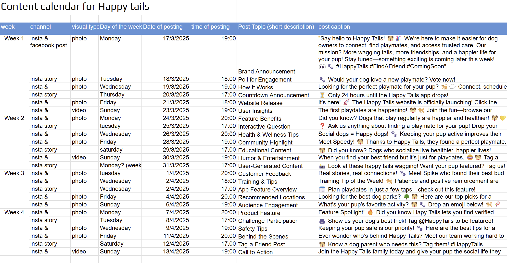
The most used social media platforms for pet brands are facebook, Tiktok and Instagram (Andrews). Because our target group is between 30 and 50, their most used social media accounts are Youtube, Facebook and instagram (Sheikh). That's why we chose only to post on Instagram and facebook. The best times to post on a day are in the earliest of the morning, or after working hours (Lang). We chose to post after working hours because our age gap is working and is spending less time on their phone.
We want to post 4 times a week. In the first week will be the launch posts of our website to get the audience excited. Those posts will be on instagram and facebook. Throughout those posts we will also make some stories on instagram to boost our interaction with the audience. After the first week we are happily showing how the users are enjoying our services and share the experiences. The reason why we want to tell and show the stories is to attract more users and followers. We also want to introduce rubrics that we will use throughout the full lifespan of our socials. We want to create a recognisable and consistent content road map for our followers so they know what to expect
Learning Points
Week 1
| # | Reach | Likes | Comments | Views/impressions |
|---|---|---|---|---|
| Post 1 | 49 | 18 | 5 | 80 |
| Post 2 | 42 | 15 | 0 | 68 |
| Post 3 | 47 | 13 | 0 | 124 |
| Post 4 Reel | 46 | 16 | 0 | 124 |
| Total | 184 | 62 | 5 | 231 |
Week 2
| # | Reach | Likes | Comments | Views/impressions |
|---|---|---|---|---|
| Post 1 | 31 | 10 | 0 | 49 |
| Post 2 | 33 | 14 | 0 | 100 |
| Post 3 | 33 | 15 | 0 | 48 |
| Post 4 | 64 | 9 | 0 | 100 |
| Total | 161 | 48 | 0 | 358 |
Week 3
| # | Reach | Likes | Comments | Views/impressions |
|---|---|---|---|---|
| Post 1 | 28 | 6 | 0 | 34 |
| Post 2 | 24 | 09 | 0 | 30 |
| Post 3 | 21 | 12 | 0 | 31 |
| Post 4 | 19 | 6 | 1 | 21 |
| Total | 92 | 33 | 1 | 167 |
Week 4
| # | Reach | Likes | Comments | Views/impressions |
|---|---|---|---|---|
| Post 1 | 26 | 9 | 0 | 41 |
| Post 2 | 25 | 14 | 0 | 54 |
| Post 3 | 21 | 5 | 0 | 42 |
| Post 4 | 64 | 9 | 0 | 72 |
| Total | 136 | 37 | 0 | 209 |
One of the biggest takeaways from our social media campaign was that cross-posting the same content on Instagram and Facebook doesn’t lead to the same results. While our Instagram page steadily grew in reach and engagement, Facebook consistently underperformed. This taught us that even if platforms seem similar, the way users interact with content can vary significantly. In hindsight, we should have tailored our Facebook posts more by using a more community-focused tone, including longer captions, or sharing relevant articles and dog-owner resources that perform better with Facebook's older demographic.
We also realized that while our posting schedule was consistent, it might not have been optimized for when our audience was actually online. Our Week 3 engagement showed a noticeable dip, which could have been a sign of posting fatigue or misaligned timing. In the future, we would use platform insights more effectively to identify high-traffic windows and experiment with posting times to maximize visibility.
Another thing we learned is that interactivity is key. While our visuals were on brand and informative, we could have created more space for followers to participate, polls, Q and A stickers, giveaways, or even a consistent “dog of the week” shoutout would have added more community involvement. These features are especially important when trying to grow a loyal and interactive audience.
Lastly, although we used hashtags, we now understand how much of a difference the right hashtags make. Our set was too generic, which limited our discoverability. In hindsight, we would research more targeted and location-specific hashtags to connect with local dog owners and niche communities who are more likely to engage and convert into users of our platform.
Overall, the project taught us the importance of platform-specific content, audience timing, and interactive storytelling. Going forward, we’d approach social media not just as a place to inform, but a space to spark meaningful conversations and community.
Future Planning
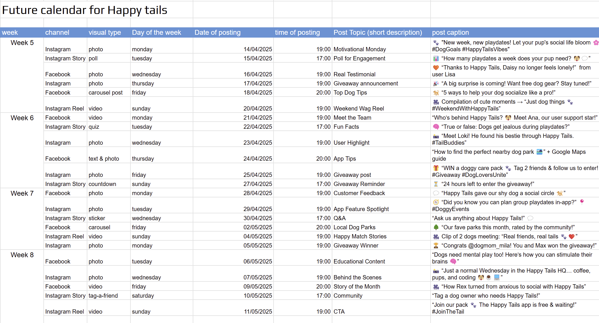
As we look ahead, our mission is to expand Happy Tails to more countries, connecting dog lovers across the globe. To achieve this, we'll enhance our social media presence by aligning with the needs and desires of our community, ensuring that we stay in tune with what matters most to our users. Alongside this digital growth, we plan to host more events that provide safe and trusted spaces for dog owners to connect in person. This will not only raise awareness for our brand but also strengthen the trust our users place in us, knowing their pups are always in safe hands. Additionally, by partnering with veterinarians, trainers, and pet stores, we'll broaden our reach and offer even more value to our community, solidifying Happy Tails as the go-to platform for dog care and socialization.
When it comes to social media, we’ve noticed a need to adapt our approach to engage users better. While our Instagram is growing, Facebook hasn’t gained the same traction. One of the main reasons for this is that we’ve been posting the same content on both platforms, even though the audiences respond differently (Pankajjjangir, 2025). To improve our Facebook engagement, we plan to tailor our posts specifically for the platform’s audience, ensuring the content resonates more effectively. We also recognize that one of the best ways to increase followers and interaction is through engaging stories and giveaways (Sakshi, 2024). Our audience loves the opportunity to win something exciting, and this not only encourages interaction but also boosts sharing. Another key improvement will be using more targeted, popular hashtags. Currently, our hashtags are fairly generic, but we understand that leveraging the right ones can create a sense of community and help us reach the ideal audience (23 Easy Tricks to Hack the Social Media Algorithm in 2025, 2025). By optimizing our hashtags, we can increase our visibility on users' homepages and drive more engagement.
We will track the performance of each post by looking at clicks, engagements, and sign-ups to see if the campaign has any effect. We will engage with followers on a daily basis by responding to comments, messages, by doing we create a strong bond with our followers making the change that they click further to our website bigger. Additionally, encourage customers to share their playdate experiences and tag Happy Tails for a chance to be featured on the platform, fostering further engagement and community involvement.
Justification
These key messages reflect our core purpose: bringing dogs and owners together in a safe and fun environment. By emphasizing socialization, well-being, and community, we ensure that every dog has the chance to enjoy life to the fullest while their owners build meaningful connections too. We chose Instagram and Facebook because they align with the digital habits of our target demographic: dog owners aged 30–50 who are tech-savvy and engaged in social media communities. Instagram offers strong visual content that allows us to showcase the joyful and social aspects of Happy Tails through photos, reels, and stories, formats that resonate with a lifestyle-focused audience. It’s also where users tend to follow pet-related pages and engage with uplifting, pet-friendly content. Facebook, on the other hand, is ideal for creating a community-centered environment. Many older millennials and Gen X users still prefer Facebook for group interactions, event planning, and shared posts. This aligns well with our goal of creating a trust-based, supportive dog care network. Despite very minimal growth on Facebook, it has potential to become a key platform for fostering long-form engagement and targeted local outreach.
Our content was posted 5-6 times a week across both platforms, balancing a mix of reels, static posts, and stories. This schedule was selected based on insights into when our audience is most active: evenings and weekends, when pet owners are likely unwinding or looking for plans with their dogs (Social Petworker, 2024) . Posting regularly throughout the week allows us to maintain visibility in our followers’ feeds without overwhelming them. Consistency also supports brand recognition, as reiterated in Pinckney Harmon’s (2020) point about how repeated visuals enhance brand familiarity. Over time, this rhythm helps to build trust and a reliable presence in the digital space.
For our social media goals, we’ve set the following objectives for the end of the year:
- Instagram: 1000 interactions across stories, posts, and reels.
- Facebook: 300 interactions across posts, stories, and shares.
- Instagram: Gain 300 new followers.
- Facebook: Gain 100 new followers.
- Website: Attract 300 visits and users.
Looking further ahead, our responsive objectives for the end of 2025 are:
While these new strategies are crucial, we also want to retain the essence of our posts, the background stories, user testimonials, announcements of new features, and behind-the-scenes looks at the team. These elements will continue to serve as the heart of our content, ensuring we remain authentic to our community and mission.
Social media links
Professionalism
In the first week, we’ll focus on launch posts to get our audience excited about the website. These posts will be shared on Instagram and Facebook. Throughout the week, we’ll also post Instagram Stories to boost engagement and interaction with our audience.
In the second week, we’ll focus on highlighting how users are enjoying our services. We’ll share their experiences, testimonials, and happy moments, whether it’s successful playdates, joyful dogs, or trusted dog-sitting connections. By telling these real stories, we aim to build trust, show the value of our platform, and attract even more users and followers to join our growing community.
-
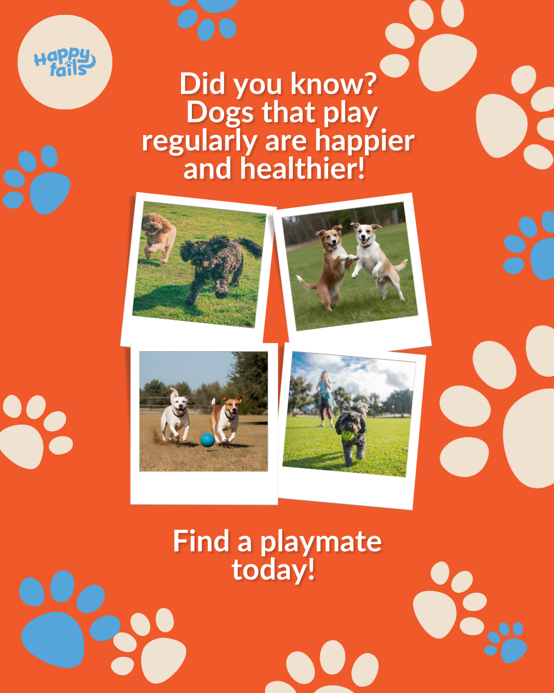
-
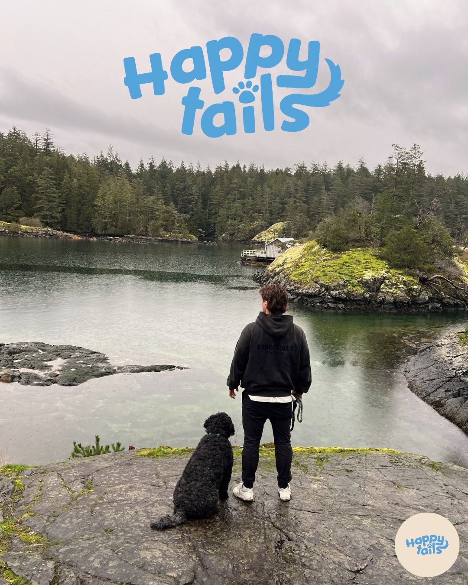
-
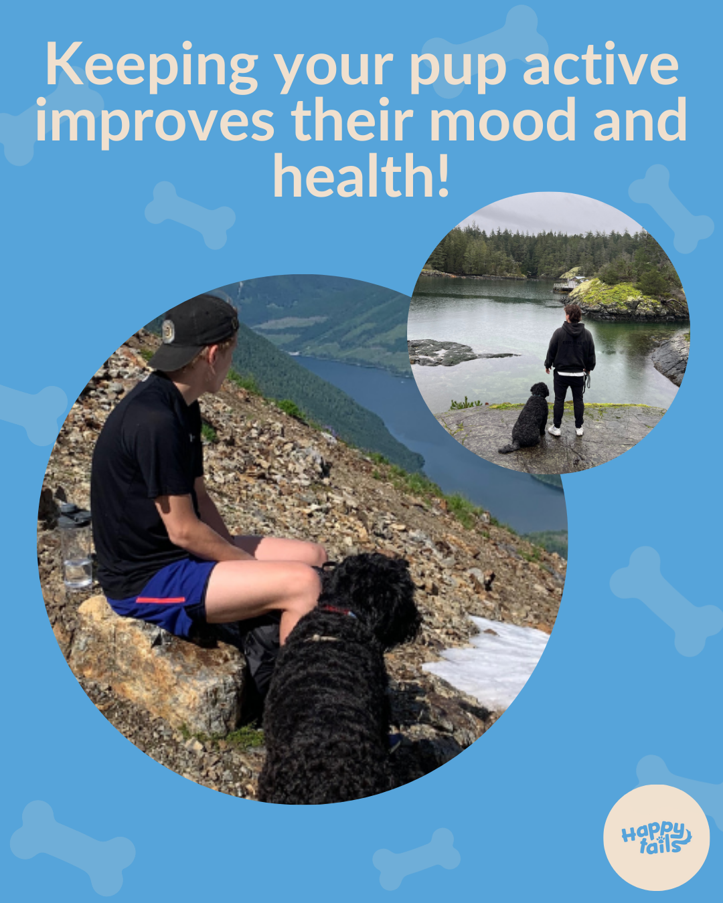
-
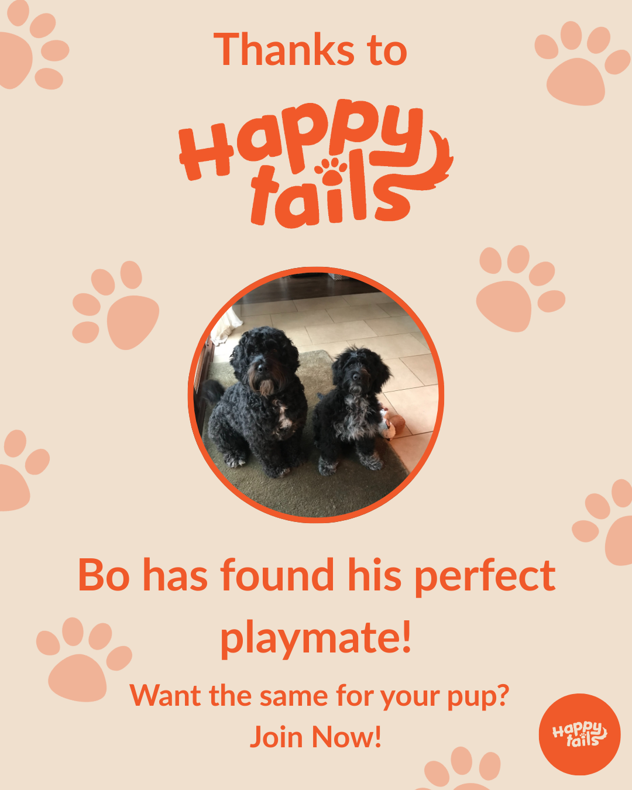
-
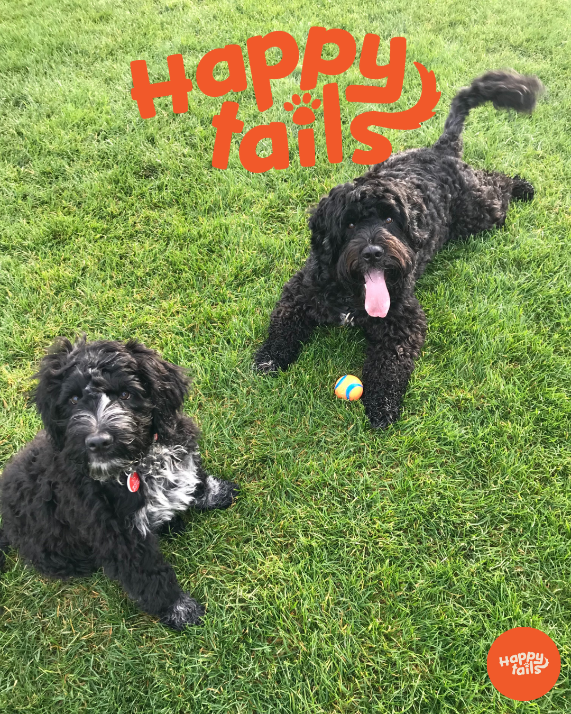
-
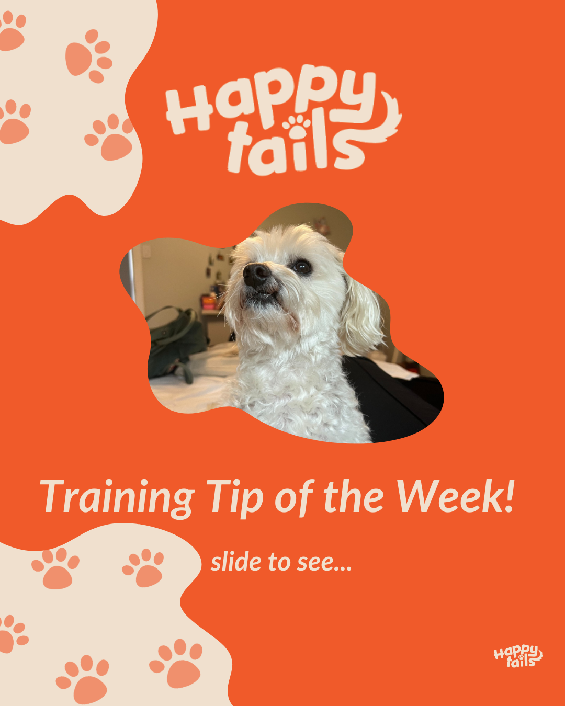
In the third and fourth week, we’ll put the spotlight back on the website by highlighting its features and sharing useful tips and tricks. This way, we can help users get the most out of the platform and encourage new visitors to explore everything we offer.
Management
Lean Canvas
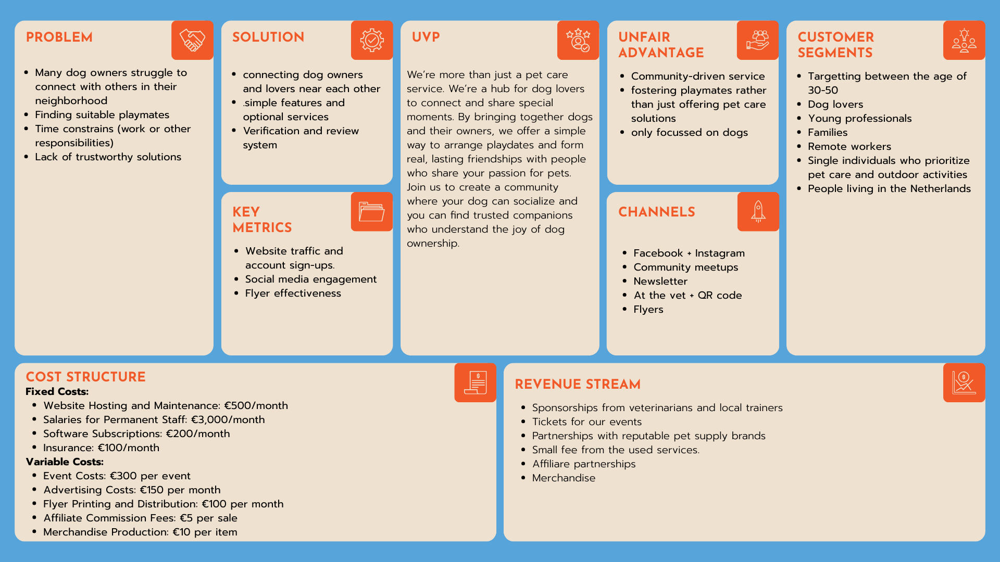
- Many dog owners struggle to connect with others in their neighborhood. Balancing work and pet care can be challenging, often leading to fewer social interactions for both owner and dog, especially in single-dog households where stimulation is limited.
- Finding suitable playmates is another issue. Owners may not know others open to dog interactions, especially if they have larger dogs, which can sometimes be seen as intimidating.
- Time constraints also play a role. Our target audience (ages 30–50) often works full-time, and short walks may not provide enough exercise or stimulation for their pets.
- Lack of trustworthy solutions: Finding trustworthy solutions and services is difficult. Nobody wants to hand out their dog to some stranger, and finding the people who will take care and love to spend time with your dog is hard. Especially in small villages.
Problem
Solution
- Happy Tails helps dog owners connect with others nearby for walks and playdates. Our platform makes it easy to let your dog play while you relax, chat, and form real connections with fellow dog lovers.
- With simple features and optional services, Happy Tails removes the stress of finding playmates. You can easily discover and message local users, no more awkward approaches or uncertainty.
- To ensure that all our users are real we include a verification and review system. Making sure that ther dog is in safe hands by a trusted person. Reading good or bad reviews will benefit both groups
Customer Segments
- Our target audience consists of dog owners aged 30 to 50 who want to socialize their pets while connecting with like-minded individuals. Many owners seek playmates for their dogs and opportunities to expand their own social circles through shared pet experiences. Additionally, a significant number are interested in flexible and reliable dog-sitting services to balance their busy schedules.
- Our primary audience includes young professionals, families, remote workers, and single individuals who integrate their dogs into daily life. They prioritize their pet’s well-being, enjoy outdoor activities, and often need trusted pet care solutions, especially when traveling. Many live in urban or suburban areas with limited open spaces, making scheduled playdates a valuable alternative. Expats and newcomers also benefit from a community-driven platform to build a trusted pet-care network.
- Dog owners in this group are comfortable using digital platforms to arrange meetups and value cost-effective, reliable alternatives to expensive pet care services. By addressing their needs, such as finding playmates, reducing guilt about leaving their dogs alone, and creating a supportive community, we are building more than just a service. Happy Tails is a trusted space where dogs can play, owners can connect, and reliable pet care is always within reach.
- We want to focus on the Netherlands first. We can put all our time and effort to make our brand appealing and well-known to this audience. We can build a solid reputation within the country. After having a bigger target audience, we can enlarge and scale up to other countries.
Unique Value Proposition
- Happy Tails is more than a pet service, it’s a community. We connect dog lovers to arrange playdates, share advice, and create real friendships through shared pet experiences.
- Our platform makes it effortless to meet others nearby and build a supportive network. Whether you're looking for a dog playmate or new friends, Happy Tails is your go-to space for both.
Unfair Advantage
- Unlike subscription-based or traditional pet care platforms, Happy Tails is a free, community-driven service for connecting dog owners in a natural and social way.
- We focus on playmates and community, not just services. Our unique angle prioritizes dog socialization and real human connection, filling a gap in the market.
Channels
- Our sustainable competitive advantage lies in our unique approach to connecting dog owners. Unlike traditional dog-sitting services or subscription-based platforms, Happy Tails is a free, community-driven space designed for those who want to meet fellow dog owners but need a little help doing so. The hard side of our website is that all user profiles are based on compatibility, not just location.
- What sets us apart is our focus on fostering playmates rather than just offering pet care solutions. We don’t just provide a service; we create opportunities for meaningful connections between dogs and their owners. By prioritizing socialization and community-building, Happy Tails fills a gap in the market, offering a more organic and engaging way for dog owners to find trusted companions for their pets while expanding their own social circles.
- We are only focussed on dogs. Because of this we can ensure that everyone using our platform knows and loves spending time with your dogs. Every wagging tail needs to feel safe and happy with everything we do as a community..
Key Metrics
- Website Traffic and Account Sign-Ups – We track visits and new user registrations to monitor platform growth.
- Social Media Engagement – Likes, comments, shares, and follows help us measure how well our content connects with our audience.
- Flyer Effectiveness – QR code scans and direct visits from printed materials let us assess offline marketing impact.
Revenue streams
- At Happy Tails, we generate revenue primarily through sponsorships from veterinarians and local trainers. These partnerships are vital for funding our day-to-day operations and providing the necessary resources to keep the platform running. By partnering with professionals who align with our values, we not only receive financial support but also gain credibility in the pet care community. This relationship allows us to offer high-quality content and services to dog owners while ensuring that our platform remains sustainable. 1 year estimate: 3 partners x €200/month x 12 months = €7,200/year
- We organize a variety of events to raise funds and expand our brand presence. These events, which include entry fees, raffles, and limited-edition merchandise sales, serve as a great way to engage the community while generating revenue. The limited-edition merchandise, ranging from apparel to pet accessories, helps us further promote Happy Tails and create a sense of exclusivity. These events not only bring in funds but also allow us to build a stronger connection with our community of dog owners, ensuring that our mission continues to grow. year estimate: 12 events x €300 average revenue per event = €3,600/year 1 year estimate: 10 pieces of merchandise sold x €25 x 12 events = €3,000/year
- To diversify our revenue, we’ve also established affiliate partnerships with reputable pet supply brands. These partnerships offer a win-win situation, as we earn a commission when users make purchases through our referral links. This income stream enables us to continue offering valuable services to dog owners, all while providing them with access to quality pet products that can benefit both them and their dogs. We ensure that the products we recommend align with our values and are trusted by the community. 1 year estimate: 100 purchases/month x €2 commission x 12 months = €2,400/year
- We seek corporate sponsorships from pet-friendly businesses that share our commitment to supporting dog owners and promoting a dog-friendly lifestyle. By offering visibility within our platform and events, we provide these businesses with the opportunity to reach a targeted audience of dog owners and pet enthusiasts. In return, these businesses contribute financially to help us continue our work. This mutual relationship not only supports our mission but also helps pet-friendly brands grow alongside Happy Tails. 1 year estimate: 4 sponsors x €750 = €3,000/year. Total 1 year estimate: €25.500/year
- When people are using our service, they will make a payment between each other. Because we provide the service, the safety and the community, we will get a small fee from the service This fee will be around 7%. This fee is needed to maintain our services and socials. We are also focussing on more features and a better user experience. 1 year estimate: 500 monthly transactions x €15 average value x 12 months x 7% fee = €6,300/year
- Fixed Costs:
- Website Hosting and Maintenance: €500/month
- Salaries for Permanent Staff: €3,000/month
- Software Subscriptions: €200/month
- Insurance: €100/month
- Variable Costs:
- Event Costs: €300 per event
- Advertising Costs: €150 per month
- Flyer Printing and Distribution: €100 per month
- Affiliate Commission Fees: €5 per sale
- Merchandise Production: €10 per item
Cost structure
- Our product, Happy Tails, is a platform designed to connect dog owners with one another to facilitate playdates, socialization, and reliable pet care. We offer a space for dog owners to find trustworthy playmates for their dogs, join a community of like-minded individuals, and arrange flexible, affordable care options such as dog sitting.
- This service contributes to our unique value proposition by offering a hassle-free way for dog owners to meet others nearby while ensuring their dogs get the socialization and care they need. Unlike other services that focus purely on dog sitting or walking, we emphasize community-building and making connections, allowing both dogs and owners to create lasting relationships.
- The fit between Happy Tails and our brand identity is clear. Our brand is centered around fostering connections, trust, and a sense of community. We are committed to making the lives of dogs and their owners more social, joyful, and stress-free. By focusing on creating an easy way for dog owners to meet each other and find support within their local areas, we align with the values of socialization, companionship, and care that our brand represents.
Services/products
Validation of Assumptions
1. Assumption: Dog owners struggle to find local playmates for their dogs. We based this on the conversations with dog owners around us. Many said they didn’t know other owners nearby or weren’t sure if people were open to dog playdates, especially for larger dogs. This showed a clear need for a platform that makes those connections easier.
2. Assumption: Dog owners between 30–50 are open to using digital platforms. We shared our concept through Instagram and got positive reactions, especially from people in that age range. Flyers with QR codes also worked well, showing that our audience is digitally active and willing to try new solutions.
Reflection on the Trademark “Happy Tails”
At first, our idea was to make a dog food website with healthy options and reviews. But we realized that emotional connection and community were stronger needs among dog owners. That insight led to our pivot toward social dog playdates.
We chose the name Happy Tails because it’s warm, memorable, and reflects joy, connection, and wagging tails, everything our platform stands for. Compared to names like PawPals or DogGo, Happy Tails felt more unique and emotionally fitting.